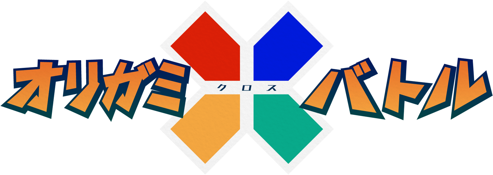
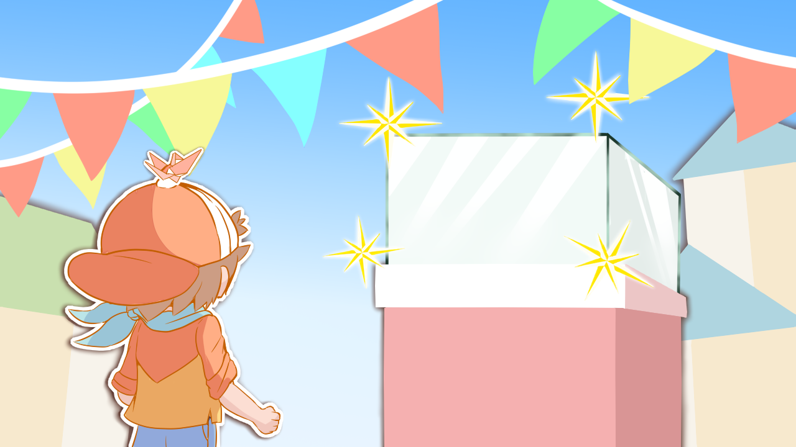

相手の飛行機を倒す対戦型見下ろし２Dシューティングゲーム
自動で進む飛行機を旋回させて上手く相手を攻撃しよう
弾は壁に当たったら反射する！ 気を付けて避けよう
最大四人まで同時に対戦できる！ みんなで盛り上がろう
四つの特色のある土地にちなんだステージ
機体と攻撃の弾を好きにカスタマイズできる！
お気に入りの組み合わせを見つけよう！

選択画面
矢印キーで選択
ボタンで決定
戦闘画面
自動で前進する
左右に倒して旋回
上に倒して加速
下に倒して減速
ボタンで攻撃
飛行機
・スタンダード＝スカイ
一般的で基本的な紙飛行機である。癖もなく扱いやすいバランスのとれた機体。最初に扱うであろう機体なので初心者向け。
型番が存在しており型番はBG－00（裏設定）
・バーディング＝ハート
鳥とアンテナを組み合わせた軽さや速さの性能にこだわった紙飛行機である。その分だけ武器の能力が低くなるという弱点がある。動かしやすいので初心者向けの想定。
NR－24―カスタム
・ダイナミクス＝ダイナ
大砲のような見た目の紙飛行機である。重厚なデザインと強力な攻撃性能にこだわっているので重くなってしまい早く落ちてしまう上に動きも遅い。遠くに飛ばすのは難しいので上級者向けを想定している。
・EX－89
アークティック＝アール
BR－00

 プレイ画面２
プレイ画面２ プレイ画面３
プレイ画面３ プレイ画面４
プレイ画面４ プレイ画面５
プレイ画面５ プレイ画面６
プレイ画面６ プレイ画面７
プレイ画面７ プレイ画面８
プレイ画面８ プレイ画面９
プレイ画面９